Parts you compose
A component yields its parts, typed with Glint. Render any part as your own element
with @as, or put its modifier on a component of yours:
<LinkTo {{d.trigger}}>.
shadcn/ui for Ember 6.12 LTS and 7
Every component and example on ui.shadcn.com, written as modern .gts
components with yielded parts and Glint types, on a headless primitives layer. shadcn's
own styles and theme tokens, compiled so Tailwind is optional. And a test harness for
every one.
pnpm add @ember-joinery/ember
Add @ember-joinery/test-support for the harnesses. Joinery publishes to npm
with 1.0; until then, the guide has
the steps.
Why
Joinery ports shadcn/ui from its source, component by component and example by example,
and compares every example's screenshots with shadcn's own, light and dark. What changes
is the framework: React's props and asChild become Glimmer's named arguments,
yielded parts and modifiers.
shadcn/ui, in React
<Dialog>
<DialogTrigger asChild>
<Button variant="outline">Open Dialog</Button>
</DialogTrigger>
<DialogContent>
<DialogHeader>
<DialogTitle>Edit profile</DialogTitle>
</DialogHeader>
…
<DialogFooter>
<DialogClose asChild>
<Button variant="outline">Cancel</Button>
</DialogClose>
<Button type="submit">Save changes</Button>
</DialogFooter>
</DialogContent>
</Dialog>Joinery, in Ember
<Dialog as |d|>
<Button @variant="outline" {{d.trigger}}>Open Dialog</Button>
<d.Content>
<d.Header>
<d.Title>Edit profile</d.Title>
</d.Header>
…
<d.Footer>
<Button @variant="outline" {{d.close}}>Cancel</Button>
<Button type="submit">Save changes</Button>
</d.Footer>
</d.Content>
</Dialog>
A component yields its parts, typed with Glint. Render any part as your own element
with @as, or put its modifier on a component of yours:
<LinkTo {{d.trigger}}>.
Leave state to the component, or own it, as in Radix: @open and
@onOpenChange, @value and @onValueChange,
with a @default… for each.
@ember-joinery/primitives is the behaviour underneath, unstyled: focus,
keyboard, layering with the Popover API, anchoring and ARIA, and everything
ember-primitives offers.
WCAG 2.2 AA and the WAI-ARIA keyboard patterns, and every test ends in an axe audit. Where shadcn's markup falls short, Joinery's is fixed and the pixels stay shadcn's.
Logical properties, a direction from the nearest dir, arrow keys that
flip, and every built-in string an argument with an English default.
shadcn's style sheets, compiled to plain CSS in a cascade layer of their own. Apps without Tailwind import two files; Tailwind apps can override any part with a class.
Install
Joinery's packages are v2 addons for Ember 6.12 LTS and 7. Vite (Embroider) apps import them directly, and classic ember-cli apps through ember-auto-import 2. Add the components and the harnesses, then import the theme's tokens and the components' CSS once.
pnpm add @ember-joinery/ember
pnpm add --save-dev @ember-joinery/test-support// app/app.ts
import '@ember-joinery/ember/tokens.css'
import '@ember-joinery/ember/joinery.css'
In a Tailwind app, put Joinery's layer between Tailwind's base and
components, and add tailwind.css, which maps the tokens to
Tailwind's theme (bg-primary, rounded-lg) and adds the
dark: variant:
@layer theme, base, joinery, components, utilities;
@import 'tailwindcss';
@import '@ember-joinery/ember/tailwind.css';The heavier components come in packages of their own, each around the one library it needs, so an app installs only what it uses:
| Package | What it holds |
|---|---|
@ember-joinery/ember
|
The components, styled: joinery.css (the Nova style) and shadcn's
seven other styles, tokens.css and the base colours,
tailwind.css, and <Icon> for lucide's icons.
|
@ember-joinery/primitives
|
The headless layer: every component's behaviour, unstyled, and ember-primitives'
utilities, one subpath each (/color-scheme, /qp,
/viewport…).
|
@ember-joinery/test-support
|
A harness for every primitive and component, and the
data-test-jn-* selectors they use.
|
@ember-joinery/chart
|
Charts (area, bar, line, pie, radar and radial) as Glimmer SVG on d3-scale and d3-shape, with an API shaped like recharts. |
@ember-joinery/carousel
|
Carousel, on Embla Carousel: slides with motion, swipe and keyboard control. |
@ember-joinery/data-table
|
Data Table: sorting, filtering, pagination, row selection and column visibility, on TanStack Table's core. |
@ember-joinery/code-block
|
Code Block: code, terminal output and diffs, with line numbers, a copy button and Shiki's highlighting. |
@ember-joinery/formwright
|
Forms on Formwright: Joinery's inputs as Formwright controls, in shadcn's Field anatomy, with field harnesses. |
@ember-joinery/file-upload
|
File uploads, on ember-file-upload: a drop zone, a file list and an upload queue with progress. |
@ember-joinery/tiptap
|
A rich-text editor, on Tiptap: a toolbar of toggles, a heading menu and tooltips, stored as HTML or JSON. |
@ember-joinery/power-calendar
|
Calendars and date pickers, on ember-power-calendar: a day, a range or several days, inline or in a popover. |
@ember-joinery/maskito
|
Masked inputs, on Maskito, with number, date and time presets, and a phone input with a country picker that stores E.164. |
The installation guide has the steps for each kind of app, and the repository's examples are one of each, built and tested in CI.
Usage
Import what you use into a .gts file. A compound component yields its parts,
each as a component and as a modifier, already wired to it: ids, ARIA, focus and state.
import { on } from '@ember/modifier'
import { Button, Dialog, Field, FieldGroup, Input, Label } from '@ember-joinery/ember'
<template>
<Dialog @name="edit-profile" as |d|>
<Button @variant="outline" {{d.trigger}}>Edit profile</Button>
<d.Content>
<d.Header>
<d.Title>Edit profile</d.Title>
<d.Description>Make changes to your profile here.</d.Description>
</d.Header>
<FieldGroup>
<Field>
<Label for="name">Name</Label>
<Input id="name" @name="name" @value={{@user.name}} @onValueChange={{@rename}} />
</Field>
</FieldGroup>
<d.Footer>
<Button @variant="outline" {{d.close}}>Cancel</Button>
<Button @name="save" {{d.close}} {{on "click" @save}}>Save changes</Button>
</d.Footer>
</d.Content>
</Dialog>
</template>Your own element: @as, or a part's modifier
<Button @as="a" href="/pricing">Pricing</Button>
<LinkTo @route="login" {{asButton variant="outline"}}>
Log in
</LinkTo>Controlled, when the app owns the state
<Dialog @open={{this.isEditing}}
@onOpenChange={{this.setEditing}} as |d|>
…
</Dialog>Theming
The tokens are shadcn's, in OKLCH (--background, --primary,
--ring, --radius, --chart-1 to
--chart-5…), and dark mode is a .dark class. All eight of
shadcn's styles ship, Nova by default, and all seven base colours. This page is styled
with them: pick a style and a base colour, and the whole page changes.
The same choices as every example in the guide.
The two imports that give an app this page's look.
import '@ember-joinery/ember/tokens.css'
import '@ember-joinery/ember/joinery.css'
A theme from ui.shadcn.com pastes in unchanged:
its :root and .dark blocks go in your own CSS, after
tokens.css, and win, because Joinery's rules sit in the
joinery cascade layer. See
Theming, or make one in the guide's
Theme Builder: pick a style and a
base colour, edit any token, see every component follow, and copy the CSS.
Components
Every component on shadcn's docs pages, every example on them, the charts gallery and a set of its blocks. Each picture here is a guide example, as the guide renders it.
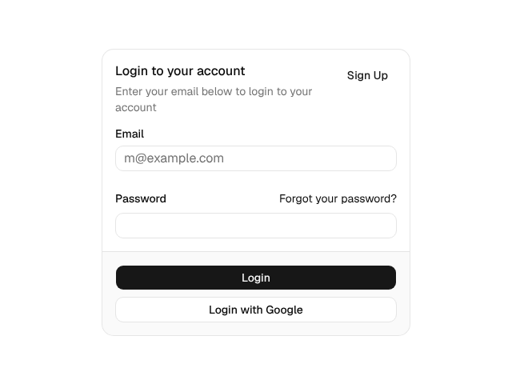
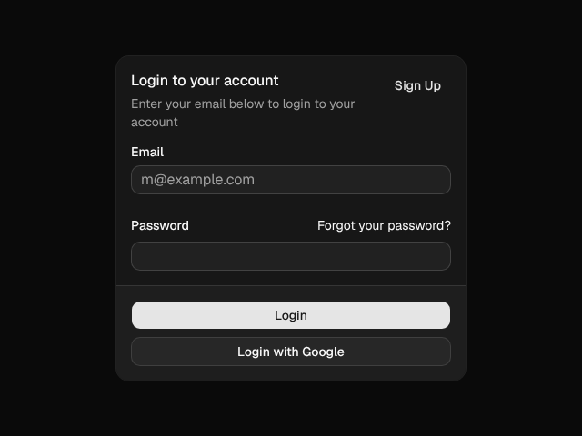
Card@ember-joinery/ember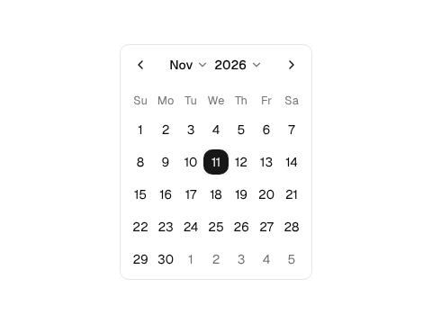
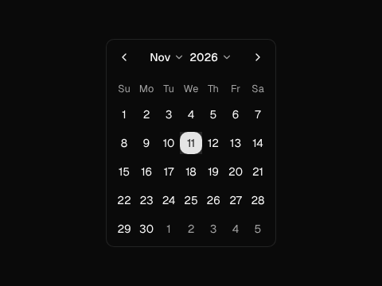
CalendarIntl, no date library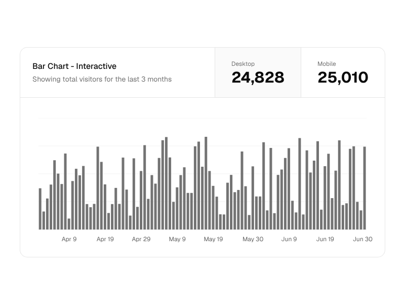
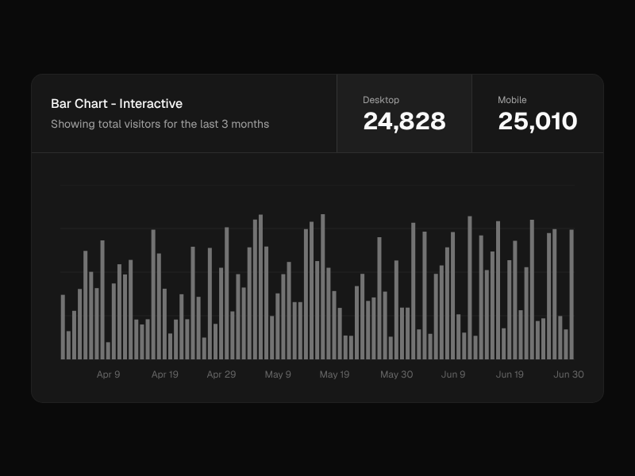
Charts@ember-joinery/chart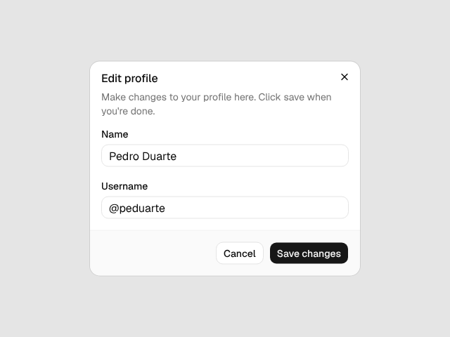
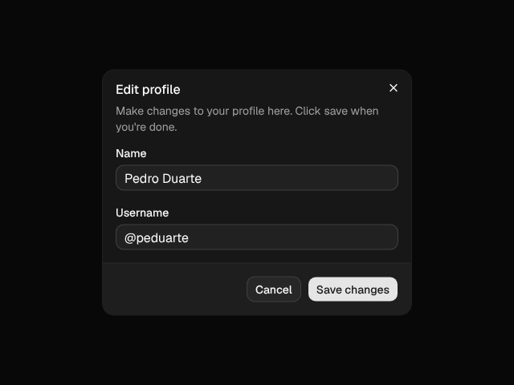
Dialog@ember-joinery/ember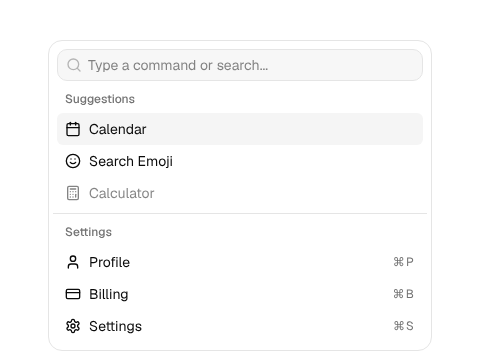
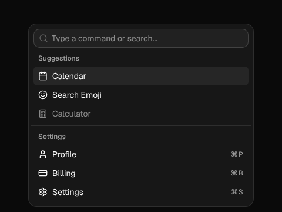
Command@ember-joinery/ember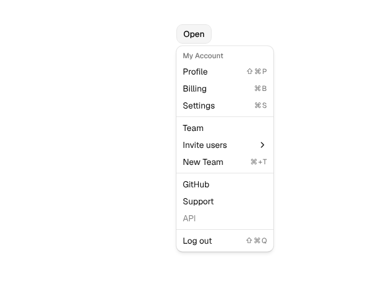
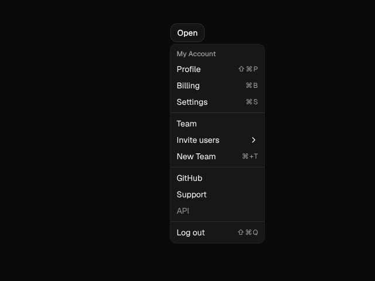
Dropdown Menu@ember-joinery/ember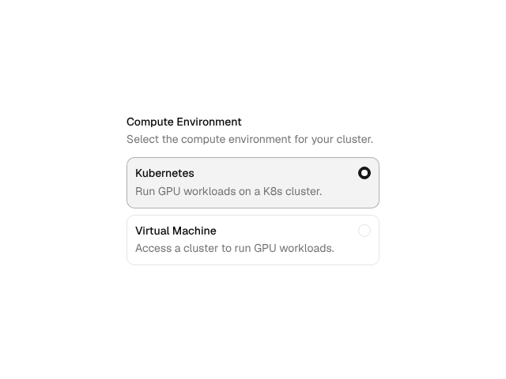
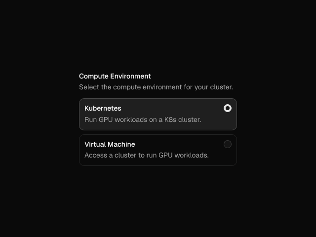
Field@ember-joinery/ember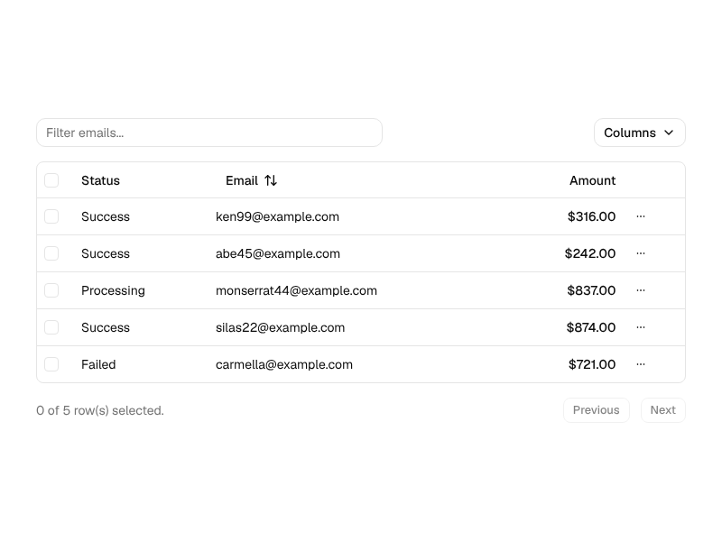
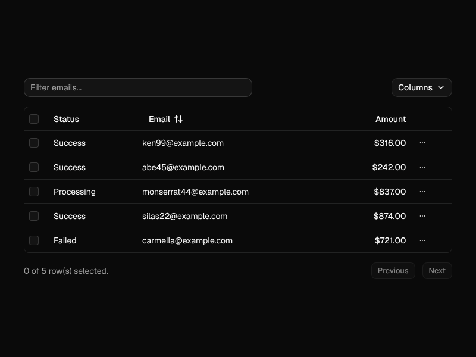
Data Table@ember-joinery/data-table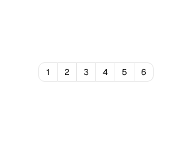
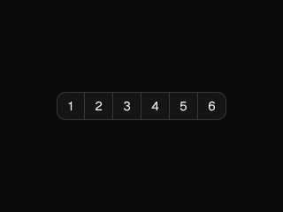
Input OTP@ember-joinery/ember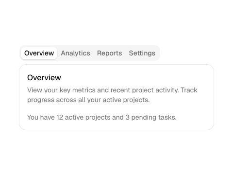
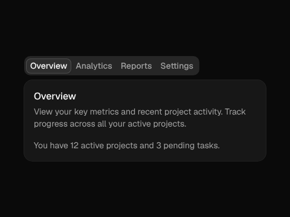
Tabs@ember-joinery/ember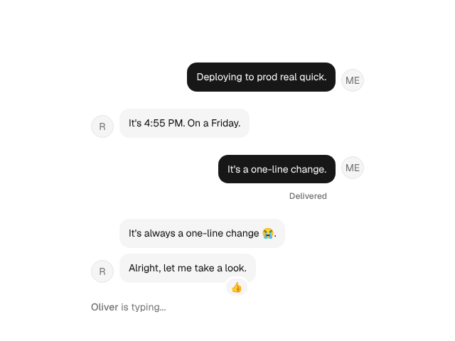
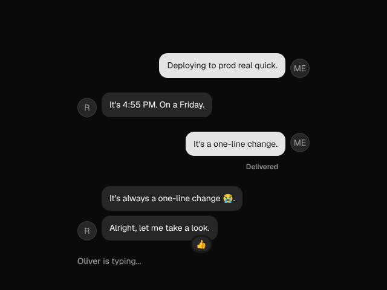
Messagethe chat set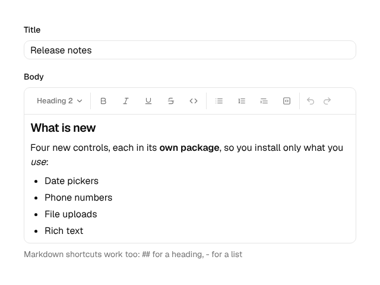
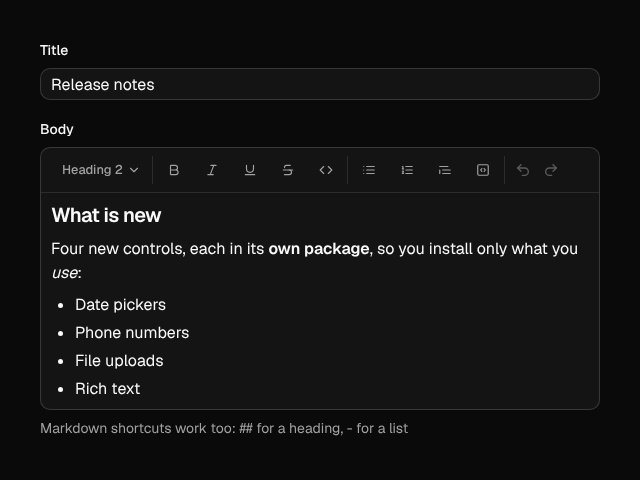
Rich Text Editor@ember-joinery/tiptapAlert, Aspect Ratio, Avatar, Badge, Breadcrumb, Button, Button Group, Card, Empty, Icon, Item, Kbd, Label, Pagination, Progress, Separator, Skeleton, Spinner, Table, Typography
Checkbox, Field, File Drop, Input, Input Group, Input OTP, Native Select, Radio Group, Rating, Slider, Switch, Textarea, Toggle, Toggle Group
Accordion, Alert Dialog, Collapsible, Dialog, Drawer, Hover Card, Popover, Sheet, Sonner and Toast, Tooltip
Combobox, Command, Context Menu, Dropdown Menu, Menubar, Navigation Menu, Select, Tabs
Calendar and
Date Picker, on Date and
Intl, with no date library
Attachment, Bubble, Marker, Message, Message Scroller, Questionnaire, Trace
Carousel, Chart, Code Block, Data Table, and on Formwright's libraries: File Upload, Masked Input, Phone Input, Power Calendar (and its range and multiple kinds), Power Date Picker, Power Date Range Picker, Rich Text Editor
shadcn's charts gallery (area, bar, line, pie, radar, radial and tooltips), its login, signup, dashboard and settings blocks, and the primitives underneath, from Accordion to Zoetrope
Testing
@ember-joinery/test-support has a harness class for every primitive and
component. It finds its component by stable data-test-jn-* attributes, drives
it the way a user does, with clicks, keys and typing, and reads its state through ARIA, so
every test checks the ARIA contract too. Joinery's own tests are written with them, and
every example in the guide shows its test.
import {
ButtonHarness, DialogHarness, InputHarness, child,
} from '@ember-joinery/test-support'
// A page object: the dialog, its field and its button.
export class EditProfile extends DialogHarness {
static named = 'edit-profile'
@child(InputHarness, 'name') declare name: InputHarness
@child(ButtonHarness, 'save') declare save: ButtonHarness
}test('renaming', async function (assert) {
await render(<template><Profile /></template>)
const dialog = new EditProfile()
await dialog.open()
assert.strictEqual(dialog.label, 'Edit profile')
await dialog.name.fillIn('Ada')
await dialog.save.click()
assert.false(dialog.isOpen)
assert.dom(dialog.trigger).isFocused()
await a11yAudit()
})| Attribute | On |
|---|---|
data-test-jn="dialog"
|
The root of a component, which its harness is scoped to |
data-test-jn-name="edit-profile"
|
The same root, given @name, to tell it from others
|
data-test-jn-part="trigger"
|
A part: a trigger, content, an item, an option… |
data-test-jn-owner
|
A part in the top layer, or portalled: the root it belongs to, which its harness follows |
data-test-jn-value
|
An option, item, tab or toggle, by its key |
The attributes render in production, as Formwright's do, and are public API. Each component's guide page lists its harness's members under Testing (see Dialog's), and the guide's Testing page covers page objects, the helpers and the base class, for writing harnesses of your own.
Forms
shadcn's forms are built on react-hook-form. Joinery's are built on
Formwright, through
@ember-joinery/formwright: Joinery's inputs as Formwright controls, a field
layout in shadcn's Field anatomy, and field harnesses on Formwright's own. Call
setupJoineryForms() once, and a field names its control.
<Form @model={{@profile}} @validator={{schema}} @onSubmit={{@save}} as |f|>
<FieldGroup>
<f.Field @for="name" @label="Name" @hint="Your public display name." />
<f.Field @for="language" @control="select" @label="Language" @options={{@languages}} />
<f.Field @for="newsletter" @control="switch" @label="Send me the newsletter" />
</FieldGroup>
<f.Submit {{asButton}}>Save</f.Submit>
</Form>
Formwright reads and writes the model, validates it with any Standard Schema, and keeps
the labels, hints, errors and aria-invalid in step; Joinery draws it. The
Formwright guide rebuilds shadcn's form examples
on it, one for each form (shadcn writes most of them once for each form library).
Demo
shadcn's dashboard block, built with Joinery from the repository's test app: an inset sidebar, section cards, an interactive chart, and a data table to select, page through and reorder by dragging. The sidebar's Settings opens the settings block, a dialog with a section per link. Open it on its own, or see each block, and its code and tests, in the guide's Blocks.
Guide
The guide has a page for each component, laid out like its ui.shadcn.com page, with every upstream example ported, live, and tested with its harness. Each example switches style, base colour, radius, light and dark, and right to left, shows itself at a phone's or a tablet's width, and has Template and Test tabs to copy from. A theme builder shows every component in the theme you make, and the API reference is generated from each package's types.
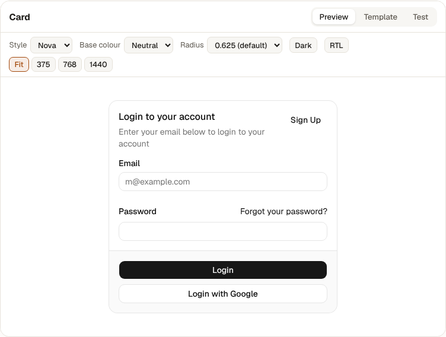
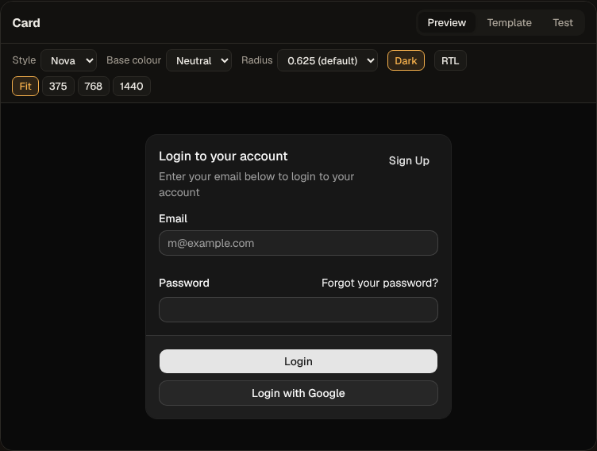
Siblings
Joinery follows the methods of its siblings, and works with them.
Declarative, accessible forms for Ember: any validator, any data layer, and harnesses that read like your users. Joinery's forms are built on it.
Enums as classes for TypeScript, with members, labels and options, which a select or radio group can take as its choices.